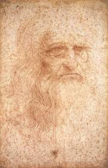

Open Leo
A Digital Library of Scolarly Digital Editions of Leonardo da Vinci's worksLeonardo da Vinci and his Codices: The Testament of a Genius

Leonardo da Vinci, born Leonardo di ser Piero da Vinci in Vinci, Florence, in 1452. He is the ultimate symbol of the renaissance
genius, not only because of his contribution to the italian artistic landscape but also for his
innovative ideas and scientific studies.
As the illegitimate son of a Florentine notary, Piero da Vinci, and a local woman named Caterina, Leonardo precluded from professions such as
notary like his father and exempted him from traditional scholastic instruction.
In the mid-1460s, Leonardo entered the Florentine workshop (bottega) of Andrea del Verrocchio one of the leading florentine painters of the time.
Here Leonardo was exposed to technical skills as well as artistic skills that allow him to become one of the greatness artist of the period.
Developing groundbreaking methods in painting such as the sfumato, a technique involving the gradual transition between colors
and tones to eliminate hard outlines, thereby replicating human visual perception and atmospheric depth, allongside the use of chiaroscuro that allow him
to established dramatic contrasts between light and shade to model three-dimensional forms on a two-dimensional plane.
During the following years Leonardo move between Florence, Milan, Rome and France where he produce a huge amount of paintings, sculpures and diverse mastepieces
that demostrated the greatness of italian painters during the renaissance.
Today people from all arround the wold gather to see his works, being the most famous the
"La Gioconda" housed at the Louvre, France, "The Last Supper" fresco in Milan, Italy ,
"Annunciation" housed at the Uffizi Gallery, Italy, "The Virgin of the Rocks" housed at the Louvre, France.
Leonardo was a unique figure in the history of Italy; he famously described himself as “homo sanza
lettere” since he was not educated on Latin or Greek, which were the essential languages of the time to
be able to understand and study ancient texts in their original form. However, this limitation did not
stifle his curiosity, instead it encouraged him to look beyond traditional “absolute truths”. Leonardo
placed fundamental importance to experimentation and observatio (experientia) as the basis of any study. He was one a
pioneer in the direct investigation of the human body, conducting meticulous anatomical dissections.
Every study he performed was accompanied by a series of detailed sketches. He produced a vast body of
notes on anatomy as well as zoology, mechanics, physics, art, mathematics.
Leonardo’s codices are personal notebooks filled with drawings, calculus and intuitions that testify to
his research process and the evolution of his thought characterized by left-handed mirror writing, intricate mechanical schematics, and analytical commentary.
Upon his death in Ambroise, France in 1519, these manuscripts were
entrusted to his pupil Francesco Melzi, who committed himself to their preservation. In the following centuries,
these loose papers were reorganized into collection all around the world, becoming the codices we know today. Among the most
famous are:
The "Codex Atlanticus" housed at Biblioteca Ambrosiana in Italy, being the largest single collection, containing 1,119 leaves spanning topics in hydraulic engineering, military technology, and mathematics.
The "Codex Arundel" housed at the British library, England, a collection of folios focusing primarily on geometry, mechanics, and physical architecture.
The "Codex Leicester" that makes part of a private collection, is a specialized manuscript devoted to hydrodynamics, the properties of water, and celestial light reflection.
The "Codex on the Flight of Birds" housed at the Royal Library of Turin, Itlay, An analytical study of avian flight dynamics applied to the design of mechanical flying apparatuses.
These codices contain several hypotheses, corrections and contradictions as they
represent the authentic process of his studies. Most of his ideas and inventions remain strikingly relevant today
demonstrating the genius behind Leonardo da Vinci.
To know more about Leonardo Da Vinci:
Giorgio Vasari, Le vite de' più eccellenti pittori, scultori e architettori nelle redazioni del 1550 e 1568, a cura di Rosanna Bettarini e commento di Paola Barocchi, 6 voll., Firenze, Sansoni, 1966–1987
Cricco, Giorgio & Di Teodoro, Francesco Paolo, "Itinerario nell'arte. Dal Gotico Internazionale al Manierismo". 4th ed., vol. 3, Zanichelli, 2017.
Leonardo3 Museum
Leonardo Da Vinci, Treccani
Museo Leonardiano di Vinci
Google Arts & Culture
The Project
Open Leo is a project for a Digital Library dedicated to Codex and manuscript resources.
Open Leo is based on the work done by E-Leo and
adapted for the recuring need of the
semantic web and the standards of a proper Scholarly Digital Edition of Leonardo Da Vinci's works.